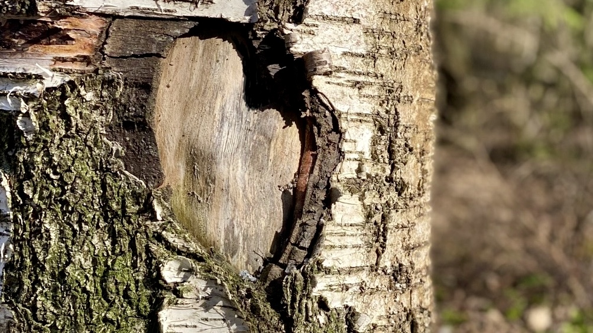

<?xml version="1.0" encoding="UTF-8"?><rss version="2.0"
	xmlns:content="http://purl.org/rss/1.0/modules/content/"
	xmlns:wfw="http://wellformedweb.org/CommentAPI/"
	xmlns:dc="http://purl.org/dc/elements/1.1/"
	xmlns:atom="http://www.w3.org/2005/Atom"
	xmlns:sy="http://purl.org/rss/1.0/modules/syndication/"
	xmlns:slash="http://purl.org/rss/1.0/modules/slash/"
	>

<channel>
	<title>Aistimus</title>
	<atom:link href="https://aistimus.com/feed/" rel="self" type="application/rss+xml" />
	<link>https://aistimus.com/</link>
	<description>Lämpöisesti tervetuloa metsäkylpyyn</description>
	<lastBuildDate>Sun, 26 May 2024 16:27:53 +0000</lastBuildDate>
	<language>fi</language>
	<sy:updatePeriod>
	hourly	</sy:updatePeriod>
	<sy:updateFrequency>
	1	</sy:updateFrequency>
	<generator>https://wordpress.org/?v=6.5.3</generator>
	<item>
		<title>Onko sinulla kilpirauhasen vajaatoiminta elämänkumppanina?</title>
		<link>https://aistimus.com/onko-sinulla-kilpirauhasen-vajaatoiminta-elamankumppanina/</link>
		
		<dc:creator><![CDATA[Kirsi Suomalainen]]></dc:creator>
		<pubDate>Sun, 26 May 2024 16:20:25 +0000</pubDate>
				<category><![CDATA[Yleinen]]></category>
		<category><![CDATA[keskusteluapua]]></category>
		<category><![CDATA[kilpirauhasen vajaatoiminta]]></category>
		<category><![CDATA[kognitiivis-ratkaisukeskeinen lyhytterapia]]></category>
		<category><![CDATA[luontoterapeutti]]></category>
		<category><![CDATA[lyhytterapeutti]]></category>
		<category><![CDATA[matala kynnys]]></category>
		<category><![CDATA[mentaalivalmentaja]]></category>
		<category><![CDATA[nainen ja kilpirauhasen vajaatoiminta]]></category>
		<category><![CDATA[ratkaisukeskeinen lyhytterapia]]></category>
		<category><![CDATA[sairaus elämänkumppanina]]></category>
		<category><![CDATA[tampere]]></category>
		<category><![CDATA[terapeutti]]></category>
		<category><![CDATA[vertaistuki]]></category>
		<guid isPermaLink="false">https://aistimus.com/?p=1091</guid>

					<description><![CDATA[<p>Opiskelen yrittäjyyden ohessa liiketoimintaa ja niiden opiskelujen puitteissa olen tutustunut upeaan Outiin ja meitä kumpaakin yhdistää opiskelujen lisäksi kilpirauhasen vajaatoiminta. Kävimme Outin (Out In liikunta- ja hyvinvointipalvelut (@outinhy) • Instagram-kuvat ja -videot) kanssa keskustelemassa asiasta Kaupin lämpöisillä rantakallioilla. ”Kilpirauhasen vajaatoiminta eli hypotyreoosi on kilpirauhasen sairaus, jossa kilpirauhanen ei kykene tuottamaan riittävästi kilpirauhashormonia. Hormonin puute hidastaa aineenvaihduntaa, [&#8230;]</p>
<p>Artikkeli <a href="../onko-sinulla-kilpirauhasen-vajaatoiminta-elamankumppanina.html">Onko sinulla kilpirauhasen vajaatoiminta elämänkumppanina?</a> julkaistiin ensimmäisen kerran <a href="../aistimus_default_3.html">Aistimus</a>.</p>
]]></description>
										<content:encoded><![CDATA[<p>Opiskelen yrittäjyyden ohessa liiketoimintaa ja niiden opiskelujen puitteissa olen tutustunut upeaan Outiin ja meitä kumpaakin yhdistää opiskelujen lisäksi kilpirauhasen vajaatoiminta. Kävimme Outin (<a href="https://www.instagram.com/outinhy/">Out In liikunta- ja hyvinvointipalvelut (@outinhy) • Instagram-kuvat ja -videot)</a> kanssa keskustelemassa asiasta Kaupin lämpöisillä rantakallioilla.</p>
<p>”Kilpirauhasen vajaatoiminta eli hypotyreoosi on kilpirauhasen sairaus, jossa kilpirauhanen ei kykene tuottamaan riittävästi kilpirauhashormonia. Hormonin puute hidastaa aineenvaihduntaa, mikä aiheuttaa lukuisia oireita. Kilpirauhasen vajaatoimintaa hoidetaan tyroksiinihormonilla, joka poistaa valtaosalla oireet täysin.&#8221; Lisää vajaatoiminnasta ja sen oireista  <a href="https://www.pihlajalinna.fi/palvelut/yksityisasiakkaat/terveys/kilpirauhasen-vajaatoiminta">Kilpirauhasen vajaatoiminta | Terveys | Yksityisasiakkaat | Palvelut | Pihlajalinna</a></p>
<p>Outilla on diagnosoitu kilpirauhasen vajaatoiminta noin seitsemän vuotta sitten. Hän ajatteli tuolloin, että rautavarastot ovat huvenneet olemattomiin, kun hän ei jaksanut enää juosta ja kehon valtasi jatkuva väsymys, mikä ei lähtenyt nukkumalla. Outi on juossut maratoneja ja hän ei kyennyt enää juoksemaan edes kahdeksan kilometrin lenkkejä ilman, että olisi välillä kävellyt. Onnekseen hänellä oli silloin tosi hyvä työterveyshoitaja ja -lääkäri, jotka halusivat tutkia hänet perusteellisemmin, kuin vain Outin haluaman ferritiiniarvon. Tutkimuksista löytyi kilpirauhasen autoimmuunitulehdus, jolloin sairaus kehittyy hitaasti, jopa vuosien ajan, tällöin oireisiin tottuu &#8211; kunnes ei enää jaksa. Outi sanoo oireiden tulleen hänen elämäänsä neljästä viiteen vuotta ennen diagnoosia.</p>
<p>Kilpirauhashormonin puute aiheutti Outille, edellä mainitun väsymyksen lisäksi; turvotusta, alakuloisuutta, jaksamisen kanssa oli ongelmia, lievää painon nousua (vaikka söi normaalisti ja liikkui aktiivisesti) hiukset ohenivat ja muistin kanssa oli ongelmia. Nykyisin oireistoon kuuluu se, ettei palaudu urheilusta samalla lailla, kun ennen sairautta ja tämän myötä osa harrastuksista on mennyt uusiksi. Tilalle on tullut lempeitä lajeja, kuten jooga ja pilates.</p>
<p>Itselläni oireita olivat jatkuvan väsymyksen lisäksi seuraavat; painoa kertyi lyhyessä ajassa pienen ihmisen verran, iho kuivui silmissä, aamuturvotusta jaloissa ja sormissa, libido katosi, muisti pätki, jäätävä aivosumu, ääni oli hyvin matala ja käheä ja eniten itsetuntooni vaikuttanut – hiuksia lähti niin paljon, että julkisilla paikoilla ja asiakaskohtaamisissa käytän nykyään hiuslisäkettä. Pidin näitä oireita neljä vuotta sitten yrittäjyyteen kuuluvina stressioireina, mutta rakas siskoni passitti mua menemään tutkimuksiin. Mentyäni sitten lääkäriin, multa löydettiin kasvain kilpirauhasesta, mikä poistettiin kiireellisenä ja tuloksia sen laadusta jouduinkin odottelemaan vajaa kaksi kuukautta. Onnekseni kasvain oli hyvälaatuinen.</p>
<p>Omat liikkumismuodot ovat menneet uusiksi, sillä sykettä nostattavat lajit ovat ehdoton ei. Ylläpidän omaa hyvinvointia venyttelyllä, lempeillä kävelylenkeillä ympäröivää luontoa aistien ja vesijuoksun äärellä.</p>
<p>Olemme kumpikin saaneet lääkityksellä elämän tasapainoon, mutta herkällä korvalla täytyy silti kuulostella omaa jaksamistaan ja sitä, mihin laittaa omat rajat yrittäjänä ja arjen pyörityksessä. Kukaan muu ei voi ymmärtää tämän sairauden mukana tuomia rajoitteita, kuin toinen saman sairauden kanssa elävä.</p>
<p>Outi on kokenut, ettei tarvitse tai ei ole tarvinnut itselleen vertaistukea sairauden käsittelyyn, mutta jos sinusta tuntuu, että kaipaat ymmärtäjää tai tukijaa, niin <a href="../ota-yhteytta.html">Ota yhteyttä | Aistimus</a> tai sitten <a href="https://kilpirauhasliitto.fi/vertaistuki/">Vertaistuki &#8211; Kilpirauhasliitto</a>.</p>
<p>Lempeydellä, Kirsi</p>
<p>&nbsp;</p>
<p>Artikkeli <a href="../onko-sinulla-kilpirauhasen-vajaatoiminta-elamankumppanina.html">Onko sinulla kilpirauhasen vajaatoiminta elämänkumppanina?</a> julkaistiin ensimmäisen kerran <a href="../aistimus_default_3.html">Aistimus</a>.</p>
]]></content:encoded>
					
		
		
			</item>
		<item>
		<title>Voiko lapsettomuudesta selvitä?</title>
		<link>https://aistimus.com/voiko-lapsettomuudesta-selvita/</link>
		
		<dc:creator><![CDATA[Kirsi Suomalainen]]></dc:creator>
		<pubDate>Fri, 10 May 2024 14:53:06 +0000</pubDate>
				<category><![CDATA[Yleinen]]></category>
		<category><![CDATA[endometrioosi]]></category>
		<category><![CDATA[epäonnistuminen naisena]]></category>
		<category><![CDATA[itsemyötätunto]]></category>
		<category><![CDATA[lapsettomien lauantai]]></category>
		<category><![CDATA[lapsettomuus]]></category>
		<category><![CDATA[lapsettomuushoidot]]></category>
		<category><![CDATA[luonto]]></category>
		<category><![CDATA[luontoterapia]]></category>
		<category><![CDATA[lyhytterpia]]></category>
		<category><![CDATA[merkityksellinen elämä]]></category>
		<category><![CDATA[tahaton lapsettomuus]]></category>
		<category><![CDATA[tampere]]></category>
		<category><![CDATA[terapia]]></category>
		<category><![CDATA[tukea oman lapsettomuuden käsittelyyn]]></category>
		<category><![CDATA[työkyky]]></category>
		<category><![CDATA[ystävät]]></category>
		<guid isPermaLink="false">https://aistimus.com/?p=1051</guid>

					<description><![CDATA[<p>&#8221;Tahattoman lapsettomuuden teemaviikko muistuttaa, että vanhemmuus ei ole itsestäänselvyys. Tahaton lapsettomuus on yleistä: Suomessa yksi viidestä hedelmällisessä iässä olevista kohtaa tahattoman lapsettomuuden. Kyseessä on yksi aikuisiän suurimmista kriiseistä, joka vaikuttaa yksilön kehoon, mieleen, talouteen, ihmissuhteisiin, työelämään ja tulevaisuudensuunnitelmiin. Lapsettomien lauantaita on vietetty vuodesta 1994 alkaen.&#8221; (Lapsettomien Simpukka-viikko ja Lapsettomien lauantai &#8211; Lapsettomien yhdistys Simpukka ry) [&#8230;]</p>
<p>Artikkeli <a href="../voiko-lapsettomuudesta-selvita.html">Voiko lapsettomuudesta selvitä?</a> julkaistiin ensimmäisen kerran <a href="../aistimus_default_3.html">Aistimus</a>.</p>
]]></description>
										<content:encoded><![CDATA[<p></p>
<p>&#8221;Tahattoman lapsettomuuden teemaviikko muistuttaa, että vanhemmuus ei ole itsestäänselvyys. Tahaton lapsettomuus on yleistä: Suomessa yksi viidestä hedelmällisessä iässä olevista kohtaa tahattoman lapsettomuuden. Kyseessä on yksi aikuisiän suurimmista kriiseistä, joka vaikuttaa yksilön kehoon, mieleen, talouteen, ihmissuhteisiin, työelämään ja tulevaisuudensuunnitelmiin. Lapsettomien lauantaita on vietetty vuodesta 1994 alkaen.&#8221; (<a href="https://simpukka.info/tapahtumat/simpukka-viikko-ja-lapsettomien-lauantai/">Lapsettomien Simpukka-viikko ja Lapsettomien lauantai &#8211; Lapsettomien yhdistys Simpukka ry)</a></p>
<p>Opiskelen yrittäjyyden ohessa ja mentorinani toimii <a href="https://www.instagram.com/sisamaanmuija/">Veera Matilainen (@sisamaanmuija).</a>Tapasimme Veeran kanssa luonnossa, nuotion äärellä ja keskustelimme kummallekin hyvin läheisestä ja merkityksellisestä aiheesta – lapsettomuudesta ja siitä, miten se on vaikuttanut elämään.</p>
<p>Kummankin lapsettomuuden taustalla on tahaton lapsettomuus, mikä johtuu sairaudesta nimeltään endometrioosi. Terveyskirjaston suomenkielinen määritelmä sille on kohdun limakalvon sirottumatauti. ”Nimi kuvastaa sairautta: kohdun limakalvon kaltaista kudosta esiintyy kohdun ulkopuolella, esimerkiksi munasarjoissa, munajohtimissa, vatsakalvon pinnalla tai emättimen ja limakalvon välissä.” (<a href="https://www.terveyskirjasto.fi/dlk00119">Endometrioosi &#8211; Terveyskirjasto</a>)</p>
<p>Endometrioosin oireet voivat aiheuttaa invalidisoivia kipuja, jotka omalla kohdallani lamaannuttivat minut työkyvyttömäksi 3-5 päivänä kuukaudesta. Henkinenkin puoli oli kovilla, kun tiesi, että kivut palaavat neljän viikon sykleissä. Pääsin vihdoin (useamman vuoden jälkeen) kivuttomaksi, kun minulta poistettiin vuosituhannen vaiheessa kohtu ja munasarjat – saaden sen myötä vaihdevuodet vasta kolmekymppisenä.</p>
<p>Veera puolestaan näki kaksi kertaa kaksi viivaa tikussa ja molempina kertoina joutui hautaamaan keskenmenojen myötä unelman omasta lapsesta. ”Rankin osuus koko matkalla on ollut se, että menimme lapsettomuushoitoihin. Se tuntui jotenkin minulle väärältä tavalta edetä äidiksi.” Veera muistelee.</p>
<p>Heti hoitojen jälkeen Veera aloitti hänen puolisonsa kanssa adoptioneuvonnan, missä adoptioneuvoja innostui kovasti heistä ja ehdotti jopa sisarusadoptiota. Prosessi kuitenkin keskeytettiin pariskunnan omasta tahdosta heidän huomattuaan, että aiemman kokemuksen käsittely oli vielä kesken.</p>
<p>Veeralla ja minulla lapsettomuus on tuonut mukanaan tunteen tai ajatuksen siitä, että olemme epäonnistuneet yhteiskunnan luoman paineen alla siinä yhdessä tehtävässä, miksi (muka) nainen on luotu – eli äidiksi. Veera on kuullut useita kertoja elämänsä aikana, kuinka hän olisi loistava äiti. Hän taistelee asian (lapsettomuus) kanssa, kun mieltä painaa se, että häneltä on viety mahdollisuus, mihin itse ei voi vaikuttaa. Hänelle tulee pelkoja siitä, että hän katkeroituisi ja muuttuisi negatiivisemmaksi.</p>
<p>Veera ammentaa oman henkisen hyvinvoinnin luonnosta, ystävistä, lähipiiristä, perheestä ja matkustelusta. Veera latautuu ihmisistä ja antaa omaa positiivista ja iloista energiaansa muille.</p>
<p>Veera ja puolisonsa ovat käyneet asian tiimoilta lukemattomia keskusteluja ja heillä on upea kyky terapoida itse itseään. Heidän supervoimansa on se, että he pystyvät puhumaan niistä kaikkein vaikeimmistakin asioista ja se sitoo heitä yhteen. He valitsevat toinen toisensa, päivä kerrallaan.</p>
<p>Heidän ympärillään on ihania ihmisiä, mutta totaalista lapsettomuutta on vaikea ymmärtää, jos sitä ei ole itse kokenut. Veera on kohdannut vaikeinakin aikoina äidiksi tulevia ja äitejä, koska haluaa olla onnellinen muiden puolesta. Välillä tämä on kuitenkin Veeran omien sanojen mukaan mennyt hieman yli, koska hän on mennyt esimerkiksi vauvakutsuille seuraavana päivänä keskenmenosta.</p>
<p>Kysyin, että saivatko he ammattiapua lapsettomuuden käsittelyyn ja vastauksena oli; ”Ei oikeastaan.” Kohtasin itse tämän saman, kun lääkäri aikoinaan ilmoitti siitä, etten voi koskaan saada omia biologisia lapsia – puhuen tällöin seinälle. Minkäänlaista tukea tai ammattiapua ei ollut tarjolla, saati että sitä olisi tarjottu.</p>
<p>Tahattomasti lapseton on kokenut menetyksen, mikä koetaan muun muassa pitkäaikaisena suruna, häpeänä, vihana ja kateutena. Itse en pystynyt lepertelemään juuri syntyneet vaunujen äärellä, jolloin suojelin itseäni muiden ilosta ja välttääkseni omaa suruani. Eristäydyin sosiaalisesti.</p>
<p>Nykyään olen sinut lapsettomuuden kanssa ja toisaalta olen huomannut, että lapsettoman elämä antaa erilaista väljyyttä elämiseen, kuin lapsien kanssa. Voin olla lähisuvun lapsille se täti, joka tarjoaa sataprosenttisen läsnäolonsa ja päivän parin päästä huokaista, kun villikot ovat takaisin omassa arjessaan.</p>
<p>Olisi hienoa, jos julkisella puolella olisi tarjolla apua ja tukea lapsettomuuden käsittelyyn ilman, että sitä tarvitsisi itse pyytää. Veera on ollut yhteydessä eri tahoihin kysyäkseen, miksi ei ole vertaisryhmiä heille, jotka eivät ole koskaan onnistuneet saamaan lapsia. Mitä voisimme asian tiimoilta tehdä? Veeran elämän visio on mennyt lapsettomuuden myötä uusiksi ja näkisi itsensä antamassa voimaa saman kokemuksen jakaville.</p>
<p>Tahaton lapsettomuus voi olla luonnon tapa opettamaa meille itsemyötätuntoa ja antaa näin ollen meille mahdollisuuden löytää muita merkityksellisiä tapoja täyttää elämämme.</p>
<p>Jos tuntuu, että olet jäänyt oman lapsettomuutesi kanssa tuuliajolle – älä epäröi ottaa yhteyttä joko allekirjoittaneeseen tai sitten <a href="https://simpukka.info/">Lapsettomien yhdistys Simpukka ry:n.</a></p>
<p>Lempeydellä, Kirsi ♡</p>
<p>&nbsp;</p>
<p>Artikkeli <a href="../voiko-lapsettomuudesta-selvita.html">Voiko lapsettomuudesta selvitä?</a> julkaistiin ensimmäisen kerran <a href="../aistimus_default_3.html">Aistimus</a>.</p>
]]></content:encoded>
					
		
		
			</item>
		<item>
		<title>Mitä lyhytterapia on?</title>
		<link>https://aistimus.com/mita-lyhytterapia-on/</link>
		
		<dc:creator><![CDATA[Kirsi Suomalainen]]></dc:creator>
		<pubDate>Sat, 24 Feb 2024 15:50:41 +0000</pubDate>
				<category><![CDATA[Yleinen]]></category>
		<category><![CDATA[kauanko lyhytterapia kestää]]></category>
		<category><![CDATA[kenelle lyhytterapia sopii]]></category>
		<category><![CDATA[kognitiivinen]]></category>
		<category><![CDATA[kognitiivis-ratkaisukeskeinen lyhytterapia]]></category>
		<category><![CDATA[mihin lyhytterapia sopii]]></category>
		<category><![CDATA[mitä lyhytterapia on]]></category>
		<category><![CDATA[ratkaisukeskeinen]]></category>
		<category><![CDATA[ratkaisukeskeinen lyhytterapia]]></category>
		<category><![CDATA[terapiamuoto]]></category>
		<category><![CDATA[toimintamallit]]></category>
		<category><![CDATA[voimavarat]]></category>
		<guid isPermaLink="false">https://aistimus.com/?p=1038</guid>

					<description><![CDATA[<p>Mitä lyhytterapia on? Usein kuulen kysyttävän, jotta mitä se lyhytterapia on. Yritän avata sitä tähän ja jos jää kysyttävää, niin laita rohkeasti viestiä yhteydenottolomakkeen kautta, kiitos. Lyhyesti; lyhytterapia tarjoaa helpotusta elämän haastaviin tilanteisiin &#8211; matalalla kynnyksellä. Se on tarkoitettu kaikille, jotka kaipaavat tukea arjen haasteisiin. Sitten sama pidemmin sanakääntein. Lyhytterapia on terapiamuoto, mikä keskittyy joko [&#8230;]</p>
<p>Artikkeli <a href="../mita-lyhytterapia-on.html">Mitä lyhytterapia on?</a> julkaistiin ensimmäisen kerran <a href="../aistimus_default_3.html">Aistimus</a>.</p>
]]></description>
										<content:encoded><![CDATA[<p>Mitä lyhytterapia on?</p>
<p>Usein kuulen kysyttävän, jotta mitä se lyhytterapia on. Yritän avata sitä tähän ja jos jää kysyttävää, niin laita rohkeasti viestiä yhteydenottolomakkeen kautta, kiitos.</p>
<p>Lyhyesti; lyhytterapia tarjoaa helpotusta elämän haastaviin tilanteisiin &#8211; matalalla kynnyksellä. Se on tarkoitettu kaikille, jotka kaipaavat tukea arjen haasteisiin.</p>
<p>Sitten sama pidemmin sanakääntein.</p>
<p>Lyhytterapia on terapiamuoto, mikä keskittyy joko ratkaisukeskeiseen tai kognitiiviseen menetelmiin ja tarkoituksena on saavuttaa haluttu tavoite mahdollisimman lyhyessä ajassa.</p>
<p>Ratkaisukeskeisessä lyhytterapiassa keskitytään asiakkaan omiin voimavaroihin, vahvuuksiin ja tulevaisuuden tavoitteiden saavuttamiseen sen sijaan, että keskityttäisiin pelkästään ongelmien vatvomiseen tai menneisyyden kaiveluun. Terapeutti ei anna valmiita vastauksia, vaan kaikki vastaukset löytyvät itse asiakkaasta, sillä asiakas on itsensä paras asiantuntija.</p>
<p>Kognitiivisessa lyhytterapiassa keskitytään taasen asiakkaan omien ajattelumallien, uskomusten ja tunteiden väliseen yhteyteen. Tarkoituksena on tunnistaa ja muuttaa itsessään olevia negatiivisia ja haitallisia ajattelumalleja, jotka voivat ylläpitää esimerkiksi riittämättömyyden tunnetta. Tarkoituksena ja tavoitteena on oppia uusia tapoja ajatella ja toimia. Uudet toimintamallit voivat auttaa asiakasta käsittelemään erilaisia psyykkisiä tai emotionaalisia ongelmia, kuten lievää masennusta, ahdistusta ja riippuvuuksia, ja tässä mainittakoon vallalla oleva some-riippuvuus.</p>
<p>Mitä tapahtuu, jos yhdistetään sekä ratkaisukeskeisyys että kognitiivisuus lyhytterapiassa?</p>
<p>Silloin siitä syntyy kognitiivis-ratkaisukeskeinen lyhytterapia, jolloin terapiassa keskitytään sekä asiakkaan ajattelumallien, uskomusten ja tunteiden muokkaamiseen (kognitiivinen) että ratkaisujen löytämiseen olemassa oleviin ongelmiin ja haasteisiin (ratkaisukeskeinen). Yhdessä pyritään tunnistamaan ja muuttamaan vääristyneitä ajattelumalleja ja samalla aloitetaan työskentely kohti selkeitä tavoitteita ja tämän kautta löytämään ratkaisuja elämän eri haasteisiin.</p>
<p>Kenelle lyhyterapia sopii?</p>
<p>Lyhytterapia sopii erityisesti sinulle, joka haluat nopeita tuloksia ja olet valmiita työskentelemään aktiivisesti halutun muutoksen tai tavoitteen saavuttamiseksi. Kaiken kaikkiaan lyhytterapia voi olla tehokas työkalu elämässä esiin nousseiden haasteiden käsittelemiseen.</p>
<p>Kauanko lyhytterapia kestää?</p>
<p>Käyntejä voi olla vain yksi tai sitten tarvitaan useampi tapaaminen, jolloin saadaan esimerkiksi pidemmän aikaa kadoksissa ollut elämänilo takaisin arkeen. Yhdessä katsomme, kuinka lyhyt tai pitkä yhteinen matkamme on.</p>
<p>Mitä lyhytterapiassa tapahtuu?</p>
<p>☞ tunnistetaan ongelma</p>
<p>☞ asetetaan tavoite/tavoitteet</p>
<p>☞ löydetään tarvittavat ratkaisut asiakkaasta</p>
<p>☞ löydetään oikeat työkalut ongelman ratkaisuun</p>
<p>☞ lisätään itsetuntemusta erilaisten tehtävien kautta</p>
<p>☞ opetellaan tarvittavia tietoisuustaitoja</p>
<p>☞ seurataan asiakkaan etenemistä haluttuun muutokseen</p>
<p>Mihin lyhytterapia sopii?</p>
<p>☞ ahdistukseen</p>
<p>☞ arjen hallintaan</p>
<p>☞ elämänilon löytämiseen</p>
<p>☞ eroon riippuvuuksista, esim. some</p>
<p>☞ itsensä rakastamiseen</p>
<p>☞ itsetunto-ongelmiin</p>
<p>☞ jaksamiseen arjessa/työssä /työttömyydessä/opiskelussa</p>
<p>☞ lievään masennukseen</p>
<p>☞ luopumiseen</p>
<p>☞ menetykseen</p>
<p>☞ suruun</p>
<p>☞ vaikeaa elämäntilanteeseen</p>
<p>☞ uupumukseen</p>
<p>☞ yksinäisyyteen</p>
<p>☞ ylipäätänsä keskusteluapua mielen päällä oleviin asioihin</p>
<p>&nbsp;</p>
<p>Jos jokin ei ole rikki, älä yritä korjata sitä.</p>
<p>Kun tiedät mikä toimii, tee lisää sitä.</p>
<p>Jos jokin ei toimi, tee jotain muuta.</p>
<p>(DeJong P. &amp; Kim Berg 1997)</p>
<p>Artikkeli <a href="../mita-lyhytterapia-on.html">Mitä lyhytterapia on?</a> julkaistiin ensimmäisen kerran <a href="../aistimus_default_3.html">Aistimus</a>.</p>
]]></content:encoded>
					
		
		
			</item>
		<item>
		<title>Aistimus on muuttanut</title>
		<link>https://aistimus.com/aistimus-on-muuttanut/</link>
		
		<dc:creator><![CDATA[Kirsi Suomalainen]]></dc:creator>
		<pubDate>Wed, 06 Sep 2023 11:06:22 +0000</pubDate>
				<category><![CDATA[Yleinen]]></category>
		<guid isPermaLink="false">https://aistimus.com/?p=981</guid>

					<description><![CDATA[<p>Tämän viikon aikana on viimeisiä tavaroita viety uuteen toimipaikkaan Tampereen Pyynikille. Toimialoina on mm. ratkaisukeskeinen lyhytterapia (Tampere), lyhytterapia, rentoutusvalmentaja (Tampere). Ota rohkeasti yhteyttä ja laitetaan muutos käyntiin. Seesteistä syyskuuta juuri sulle!</p>
<p>Artikkeli <a href="../aistimus-on-muuttanut.html">Aistimus on muuttanut</a> julkaistiin ensimmäisen kerran <a href="https://aistimus.com/aistimus_default_3.html">Aistimus</a>.</p>
]]></description>
										<content:encoded><![CDATA[<p>Tämän viikon aikana on viimeisiä tavaroita viety uuteen toimipaikkaan Tampereen Pyynikille. Toimialoina on mm. ratkaisukeskeinen lyhytterapia (Tampere), lyhytterapia, rentoutusvalmentaja (Tampere). Ota rohkeasti yhteyttä ja laitetaan muutos käyntiin. Seesteistä syyskuuta juuri sulle!</p>
<p>Artikkeli <a href="https://aistimus.com/aistimus-on-muuttanut.html">Aistimus on muuttanut</a> julkaistiin ensimmäisen kerran <a href="https://aistimus.com/aistimus_default_3.html">Aistimus</a>.</p>
]]></content:encoded>
					
		
		
			</item>
		<item>
		<title>Aistimus muuttaa uuteen toimipaikkaan</title>
		<link>https://aistimus.com/aistimus-muuttaa-uuteen-toimipaikkaan/</link>
		
		<dc:creator><![CDATA[Sitrusmedia]]></dc:creator>
		<pubDate>Tue, 15 Aug 2023 08:52:04 +0000</pubDate>
				<category><![CDATA[Yleinen]]></category>
		<guid isPermaLink="false">https://aistimus.com/?p=932</guid>

					<description><![CDATA[<p>Aistimus on löytänyt itselleen uuden toimipaikan, lähellä Pyynikin metsää ja Pyhäjärven rantoja, osoitteesta Mariankatu 31. Toiminta siellä alkaa syyskuun alussa. ”Uuteen astuessa tulee eteen hetki, jolloin ei enää ole vanhassa muttei vielä uudessa.” -Tommy Hellsten-</p>
<p>Artikkeli <a href="https://aistimus.com/aistimus-muuttaa-uuteen-toimipaikkaan.html">Aistimus muuttaa uuteen toimipaikkaan</a> julkaistiin ensimmäisen kerran <a href="https://aistimus.com/aistimus_default_3.html">Aistimus</a>.</p>
]]></description>
										<content:encoded><![CDATA[<p>Aistimus on löytänyt itselleen uuden toimipaikan, lähellä Pyynikin metsää ja Pyhäjärven rantoja, osoitteesta Mariankatu 31. Toiminta siellä alkaa syyskuun alussa.</p>
<p><em>”Uuteen astuessa tulee eteen hetki, jolloin ei enää ole vanhassa muttei vielä uudessa.” </em></p>
<p>-Tommy Hellsten-</p>
<p>Artikkeli <a href="https://aistimus.com/aistimus-muuttaa-uuteen-toimipaikkaan.html">Aistimus muuttaa uuteen toimipaikkaan</a> julkaistiin ensimmäisen kerran <a href="https://aistimus.com/aistimus_default_3.html">Aistimus</a>.</p>
]]></content:encoded>
					
		
		
			</item>
	</channel>
</rss>
